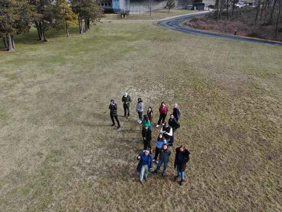
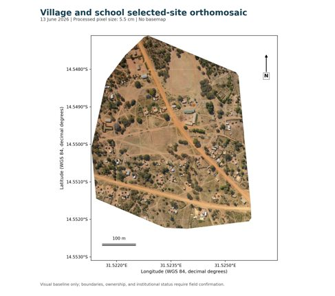

FIELD INSTRUCTION
Courses and educator groups
Course sessions, research training and educator workshops connect field practice with spatial interpretation.
Explore teaching activities →RESEARCH, TEACHING & COMMUNITY PROJECTS
Drone-based mapping, field education and community-engaged research at Columbia University.
Explore the program ↓Explore imagery and spatial products ↗FIELD METHODS & SPATIAL INFORMATION
Research, teaching
and community projects.
01 / PROGRAM DEVELOPMENT · 2021–PRESENT
Five parts of the program connect classroom capability, community-directed questions, field observations and continued research.
02 / PROJECTS & CASE STUDIES
Projects can serve several purposes. North Shore Esplanade is both part of the Staten Island community partnership and the NYC Parks research portfolio.
FOUR SPARROW RESEARCH PERSPECTIVE
“The drone really opens up the possibility of assessing much more granular changes to elevation.”
Natan Charytan · Four Sparrow Marsh research collaborator
From the earlier Let Students Lead account.
03 / FIELD ACTIVITY & SPATIAL PRODUCTS
Selected sequences connect the working context with source imagery and processed spatial products. Each view retains its own date, product identity and interpretation limits.

FIELD INSTRUCTION
Course sessions, research training and educator workshops connect field practice with spatial interpretation.
Explore teaching activities →
EDUCATIONAL CONTRIBUTION
Raphael Sutiono and Kytt MacManus developed a learning module from the Zambia/Mtukuzi fieldwork, addressing drone-data organization, interpretation, local follow-up and open-science practice.
Explore TOPSTSCHOOL modules ↗04 / CURRENT RESEARCH & FORTHCOMING WORK
05 / PEOPLE & COLLABORATORS
Applied Science Lead, Environmental Flow Physics LaboratoryOfficer of Research, Senior Staff Associate III, Columbia University
Research, teaching and project coordination connecting field observations, spatial analysis and community partnerships.
Get in touch ↗Columbia is the common institutional identity. CIESIN is central to the earlier teaching work. EFPL is prominent in NYC Parks and current Lamont research. HOT and Zambia connect both EFPL and CIESIN.
Students, educators, community partners, Natan Charytan, NYC Parks, HOT, University of Zambia/NACUAS colleagues and collaborating researchers contribute to the work.